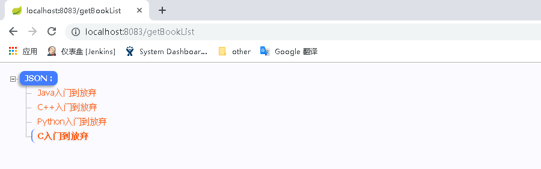
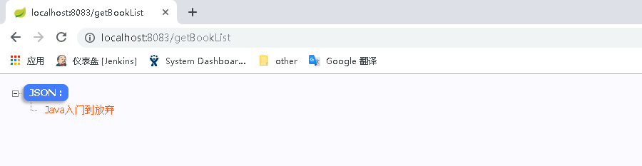
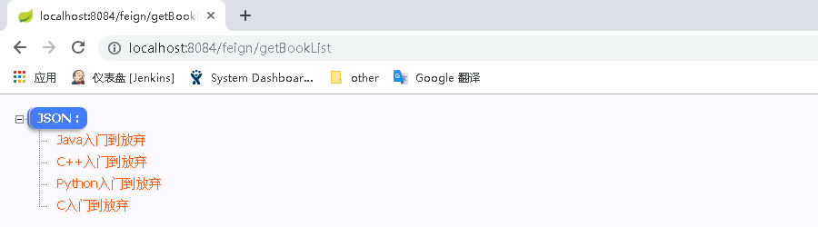
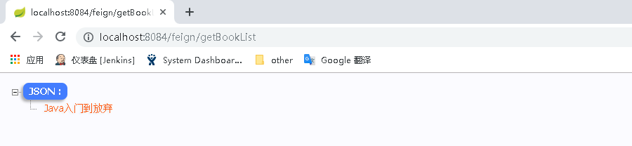

在微服务架构中，微服务之间的依赖关系错综复杂，难免的某些服务会出现故障，导致服务调用方出现远程调度的线程阻塞。在高负载的场景下，如果不做任何处理，可能会引起级联故障，导致服务调用方的资源耗尽甚至整个系统奔溃。Hystrix是一个由Netflix开源的一个延迟和容错库，它通过添加延迟容忍和容错逻辑来帮助控制这些微服务之间的交互。Hystrix通过隔离服务之间的访问点、停止跨服务的级联故障并提供回退选项来实现这一点，所有这些选项都提高了系统的总体弹性。
<project xmlns="http://maven.apache.org/POM/4.0.0" xmlns:xsi="http://www.w3.org/2001/XMLSchema-instance" xsi:schemaLocation="http://maven.apache.org/POM/4.0.0 http://maven.apache.org/xsd/maven-4.0.0.xsd">
<modelVersion>4.0.0</modelVersion>
<parent>
<groupId>com.cf</groupId>
<artifactId>sc-parent</artifactId>
<version>0.0.1-SNAPSHOT</version>
</parent>
<artifactId>sc-consumer-hystrix-ribbon</artifactId>
<dependencies>
<dependency>
<groupId>org.springframework.cloud</groupId>
<artifactId>spring-cloud-starter-netflix-eureka-client</artifactId>
</dependency>
<dependency>
<groupId>org.springframework.cloud</groupId>
<artifactId>spring-cloud-starter-netflix-hystrix</artifactId>
</dependency>
</dependencies>
</project>package consumer;
import org.springframework.boot.SpringApplication;
import org.springframework.boot.autoconfigure.SpringBootApplication;
import org.springframework.cloud.client.circuitbreaker.EnableCircuitBreaker;
import org.springframework.cloud.client.loadbalancer.LoadBalanced;
import org.springframework.context.annotation.Bean;
import org.springframework.web.client.RestTemplate;
@SpringBootApplication
@EnableCircuitBreaker
public class ConsumerApplication {
public static void main(String[] args) {
SpringApplication.run(ConsumerApplication.class, args);
}
//为RestTemplate整合Ribbon，使其具备负载均衡的能力
@LoadBalanced
@Bean
public RestTemplate restTemplate(){
return new RestTemplate();
}
}package consumer.controller;
import org.springframework.beans.factory.annotation.Autowired;
import org.springframework.web.bind.annotation.GetMapping;
import org.springframework.web.bind.annotation.RestController;
import org.springframework.web.client.RestTemplate;
import com.netflix.hystrix.contrib.javanica.annotation.HystrixCommand;
@RestController
public class ConsumerController {
@Autowired
private RestTemplate restTemplate;
@HystrixCommand(fallbackMethod="getBookListFallBack")
@GetMapping("/getBookList")
public String getBookList(){
return restTemplate.getForObject("http://sc-provider/book/list", String.class);
}
public String getBookListFallBack(){
return "[\"Java入门到放弃\"]";
}
}@HystrixCommand：表示将getBookList方法作为hystrix命令调用的方法。
fallbackMethod：指定处理回退逻辑的方法，这里是getBookListFallBack方法，当getBookList方法跑出异常时将会调用getBookListFallBack方法。
注意：回退方法应该与作为hystrix命令调用的方法具有相同的签名。
server:
port: 8083
spring:
application:
name: sc-consumer-hystrix-ribbon
eureka:
client:
registerWithEureka: false
serviceUrl:
defaultZone: http://localhost:8080/eureka/ 依次启动注册中心sc-eureka、提供者sc-provider、消费者sc-consumer-hystrix-ribbon，并访问http://localhost:8083/getBookList，结果显示如下：

这是提供者正常返回的值，接下来将提供者sc-provider关闭，再次访问http://localhost:8083/getBookList，结果显示如下：

因为将提供者sc-provider关闭后，消费者再访问提供者时会报错，Hystrix捕获异常后会直接调用回退方法也就是getBookListFallBack方法。
<project xmlns="http://maven.apache.org/POM/4.0.0" xmlns:xsi="http://www.w3.org/2001/XMLSchema-instance" xsi:schemaLocation="http://maven.apache.org/POM/4.0.0 http://maven.apache.org/xsd/maven-4.0.0.xsd">
<modelVersion>4.0.0</modelVersion>
<parent>
<groupId>com.cf</groupId>
<artifactId>sc-parent</artifactId>
<version>0.0.1-SNAPSHOT</version>
</parent>
<artifactId>sc-consumer-hystrix-feign</artifactId>
<dependencies>
<dependency>
<groupId>org.springframework.cloud</groupId>
<artifactId>spring-cloud-starter-netflix-eureka-client</artifactId>
</dependency>
<dependency>
<groupId>org.springframework.cloud</groupId>
<artifactId>spring-cloud-starter-openfeign</artifactId>
</dependency>
<dependency>
<groupId>org.springframework.cloud</groupId>
<artifactId>spring-cloud-starter-netflix-hystrix</artifactId>
</dependency>
</dependencies>
</project>package feign;
import org.springframework.boot.SpringApplication;
import org.springframework.boot.autoconfigure.SpringBootApplication;
import org.springframework.cloud.client.circuitbreaker.EnableCircuitBreaker;
import org.springframework.cloud.openfeign.EnableFeignClients;
@SpringBootApplication
@EnableFeignClients
@EnableCircuitBreaker
public class FeignApplication {
public static void main(String[] args) {
SpringApplication.run(FeignApplication.class, args);
}
}package feign.inter;
import org.springframework.cloud.openfeign.FeignClient;
import org.springframework.web.bind.annotation.PostMapping;
import feign.fallback.BookFallBack;
@FeignClient(value="sc-provider", fallbackFactory=BookFallBack.class)
public interface BookService {
@GetMapping("/book/list")
public String getBookList();
}@FeignClient注解中的fallbackFactory属性是指定的Feign客户端界面定义回退工厂。
package feign.controller;
import org.springframework.beans.factory.annotation.Autowired;
import org.springframework.web.bind.annotation.GetMapping;
import org.springframework.web.bind.annotation.RequestMapping;
import org.springframework.web.bind.annotation.RestController;
import feign.inter.BookService;
@RequestMapping("/feign")
@RestController
public class FeignController {
@Autowired
private BookService bookService;
@GetMapping("/getBookList")
public String getBookList(){
return bookService.getBookList();
}
}server:
port: 8084
spring:
application:
name: sc-consumer-hystrix-feign
eureka:
client:
registerWithEureka: false
serviceUrl:
defaultZone: http://localhost:8080/eureka/
feign:
hystrix:
enabled: true #开启hystrix支持 package feign.fallback;
import org.springframework.stereotype.Component;
import feign.hystrix.FallbackFactory;
import feign.inter.BookService;
@Component
public class BookFallBack implements FallbackFactory<BookService>{
@Override
public BookService create(Throwable cause) {
return new BookService() {
@Override
public String getBookList() {
return "[\"Java入门到放弃\"]";
}
};
}
}create方法返回一个回退实例，回退实例为Feign声明式接口BookService的实现类，提供了与BookService相对应的回退方法，BookService接口调用失败时将会调用该实现类中的回退方法。
依次启动注册中心sc-eureka、提供者sc-provider、消费者sc-consumer-hystrix-feign，并访问http://localhost:8084/feign/getBookList，结果显示如下：

这是提供者正常返回的值，接下来将提供者sc-provider关闭，再次访问http://localhost:8084/feign/getBookList，结果显示如下：

修改回退工厂类BookFallBack：
@Component
public class BookFallBack implements FallbackFactory<BookService>{
@Override
public BookService create(Throwable cause) {
return new BookService() {
@Override
public String getBookList() {
//将回退原因输出到控制台
cause.printStackTrace(System.out);
return "[\"Java入门到放弃\"]";
}
};
}
}依次启动注册中心sc-eureka、消费者sc-consumer-hystrix-feign，并访问http://localhost:8084/feign/getBookList，控制台输出：
com.netflix.hystrix.exception.HystrixTimeoutException
at com.netflix.hystrix.AbstractCommand$HystrixObservableTimeoutOperator$1.run(AbstractCommand.java:1142)
at com.netflix.hystrix.strategy.concurrency.HystrixContextRunnable$1.call(HystrixContextRunnable.java:41)
at com.netflix.hystrix.strategy.concurrency.HystrixContextRunnable$1.call(HystrixContextRunnable.java:37)
at com.netflix.hystrix.strategy.concurrency.HystrixContextRunnable.run(HystrixContextRunnable.java:57)
at com.netflix.hystrix.AbstractCommand$HystrixObservableTimeoutOperator$2.tick(AbstractCommand.java:1159)
......